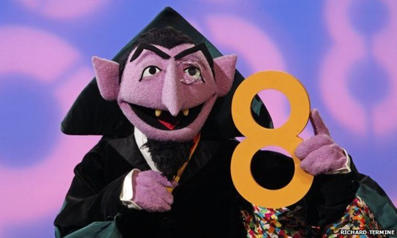
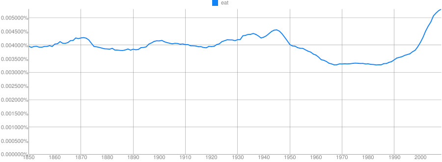
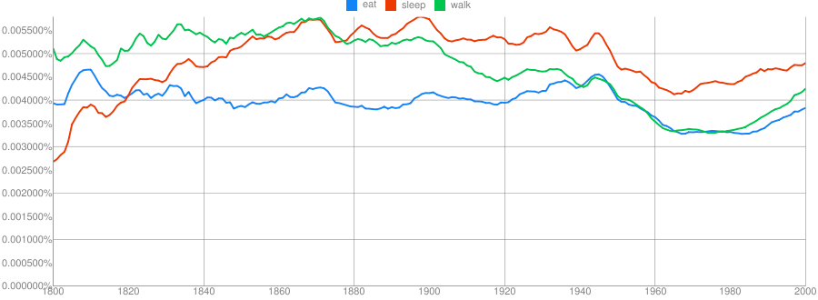
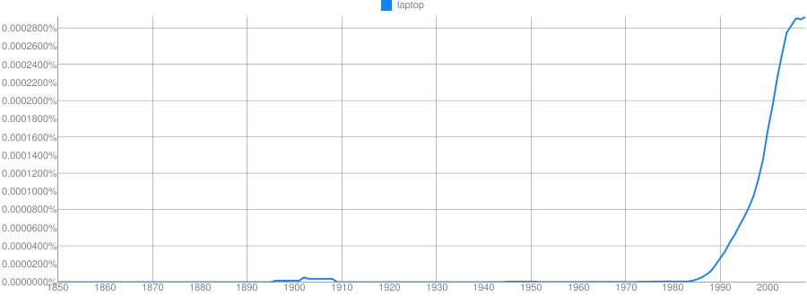
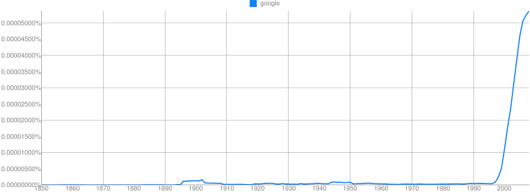

http://savethevowels.org/feedback

What are N-Grams?
Examples from the EnronSent Corpus
How N-Grams can form a language model
What are the strengths of N-Gram models?
What are their weaknesses?
How can we improve on them?
An N-gram is a sequence of words that is N items long
1 word is a ‘unigram’, 2 is a ‘bigram’, 3 is a ‘trigram’…
We identify sequences in the text, then count their frequencies
And that’s N-Gram analysis
“How often does this sequence of words occur?”
Choose a (large) corpus of text
Tokenize the words
Count the number of times each word occurs
The language-specific process of separating natural language text into component units, and throwing away needless punctuation and noise.
Margot went to the park with Talisha and Yuan last week.
Although we aren’t sure why John-Paul O’Rourke left on the 22nd, we’re sure that he would’ve had his Tekashi 6ix9ine CD, co-authored manuscript (dated 8-15-1985), and at least $150 million in cash-money in his back pack if he’d planned to leave for New York University.
Which punctuation is meaningful?
How do we handle contractions?
What about multiword expressions?
Do we tokenize numbers?
I used nltk’s nltk.word_tokenize() function
Choose a (large) corpus of text
Tokenize the words
Count all individual words (using something like nltk)
Then all pairs of words…
Then all triplets…
All quadruplets…
… and so forth
The end result is a table of counts by N-Gram
We’ll use the EnronSent Email Corpus
~96,000 DOE-seized emails within the Enron Corporation from 2007
~14,000,000 words
This is a pretty small corpus for serious N-Gram work
#!/usr/bin/env python
import nltk
from nltk import word_tokenize
from nltk.util import ngrams
es = open('enronsent_all.txt','r')
text = es.read()
token = nltk.word_tokenize(text)
unigrams = ngrams(token,1)
bigrams = ngrams(token,2)
trigrams = ngrams(token,3)
fourgrams = ngrams(token,4)
fivegrams = ngrams(token,5)
‘The’ 560,524
‘to’ 418,221
‘Enron’ 391,190
‘Jeff’ 10,717
‘Veterinarian’ 2
‘Yeet’ 0
‘of the’ 61935
‘need to’ 15303
‘at Enron’ 6384
‘forward to’ 4303
‘wordlessly he’ 2
‘Let me know’ 6821
‘If you have’ 5992
‘See attached file’ 2165
‘are going to’ 1529
‘Please let me know’ 5512
‘Out of the office’ 947
‘Delete all copies of’ 765
‘Houston , TX 77002’ 646
‘you are a jerk’ 35
‘If you have any questions’ 3294
‘are not the intended recipient’ 731
‘enforceable contract between Enron Corp.’ 418
‘wanted to let you know’ 390
‘The’ 560,524
‘of the’ 61,935
‘Let me know’ 6,821
‘Please let me know’ 5,512
‘If you have any questions’ 3,294
We’ll come back to this later
You counted words. Congratulations.
What does this win us?
If we know how often Word X follows Word Y (rather than Word Z)…
“What is the probability of word X following word Y?”
p(me | let) > p(flamingo | let)
We calculate log probabilities to avoid descending to zero
Probabilities are more useful than counts
Probabilities allow us to predict
Answers “Is this likely to be a grammatical sentence?”
Any natural language processing application needs a language model
We can get a surprisingly rich model from N-Gram-derived information alone
“You are” (11,294 occurrences) is more likely than “You is” (286 occurrences)
“Would have” (2362) is more likely than “Would of” (17)
“Might be able to” (240) is more common than “might could” (4)
“Two agreements” (35) is more likely than “Two agreement” (2)
“Throw in” (35) and “Throw out” (33) are much more common than ‘Throw’ + other prepositions
n-grams provide a very simple language model from which we can do inference
“A word is characterized by the company it keeps” - John Rupert Firth
Probabilities of language are based in part on our interaction with the world
People at Enron ‘go to the’ bathroom (17), Governor (7), Caymans (6), assembly (6), and senate (5)
People at Enron enjoy good food (18), Mexican Food (17), Fast Food (13), Local Food (4), and Chinese Food (2)
Power comes from California (9), Generators (6), EPMI (3), and Canada (2)
Probable groupings tell us something about how this world works
https://books.google.com/ngrams










Clue: Type of person (belonging to a certain group or culture)

Clue: Home/Office Technology

Clue: Country

Clue: Military Technology

Clue: Transportation Technology

Clue: Food Product


Provide some grammatical information
Provide some real-world information
They can solve real world problems
Speech recognition
“I took a walk for exercise”
“I need a wok for stir fry”
Typo detection
“I made a bog mistake”
“She got lost in a peat big”
Easy to understand and implement conceptually
Syntax and semantics don’t need to be understood
You don’t need to annotate a corpus or build ontologies
As long as you can tokenize the words, you can do an N-Gram analysis
Makes it possible for datasets where other NLP tools might not work
A basic language model comes for free
It works the same on 1000 words or 100,000,000 words
Modest computing requirements
More data means a better model
You see more uses of more N-Grams
Your ability to look at higher Ns is limited by your dataset
Probabilities become more defined
… and we have a LOT of data
“The tall giraffe ate.” and “The giraffe that ate was tall.”
“I bought an awful Mercedes.” vs. “I bought a Mercedes. It’s awful.”
“The angry young athlete” and “The angry old athlete”
We’ll fix this later!
Models are only good at estimating items they’ve seen previously
“Her Onco-Endocrinologist resected Leticia’s carcinoma”
“Bacon flamingo throughput demyelination ngarwhagl”
This is is why smoothing is crucial
Assigning very low probabilities to unattested combinations
… and why more data means better N-Grams
Syntax, Coreference, and Part of Speech tagging provide important information
“You are” is more likely than “You is” (286 occurrences)
“… the number I have given you is my cell phone…”
No juxtaposition without resolving anaphora
“Time flies like an arrow, fruit flies like a banana”
There’s more to language than juxtaposition
They’re missing crucial information about linguistic structure
They handle uncommon and unattested forms poorly
They only work with strict juxtaposition
Skip-gram models allow non-adjacent occurences to be counted
“Count the instances where X and Y occur within N words of each other”
“My Mercedes sucks” and “My Mercedes really sucks” both count towards ‘Mercedes sucks’
This helps with the data sparseness issue of N-grams
A Word Embedding turns a word’s co-occurrence properties into a vector of numbers
Captures in an opaque way the similarity of different words on the basis of co-occurrence.
Word2Vec is the most commonly used approach to this
Feeds SkipGram data into a deep neural network to generate a vector which describes a word’s ‘embedding’ in the text
Like MFCCs, it’s turning big, transparent data into smaller, opaque data.
N-Gram Models are a simple, powerful tool for NLP
They have minimal requirements for the data, and scale well
They provide rich information when used intelligently
They form the basis of the cutting edge techniques for NLP
They’re not the only tool we need to model language